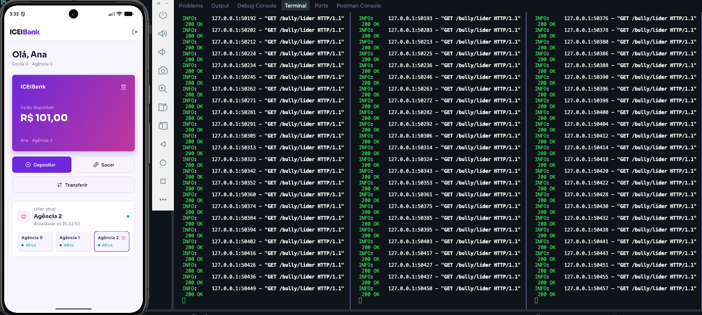
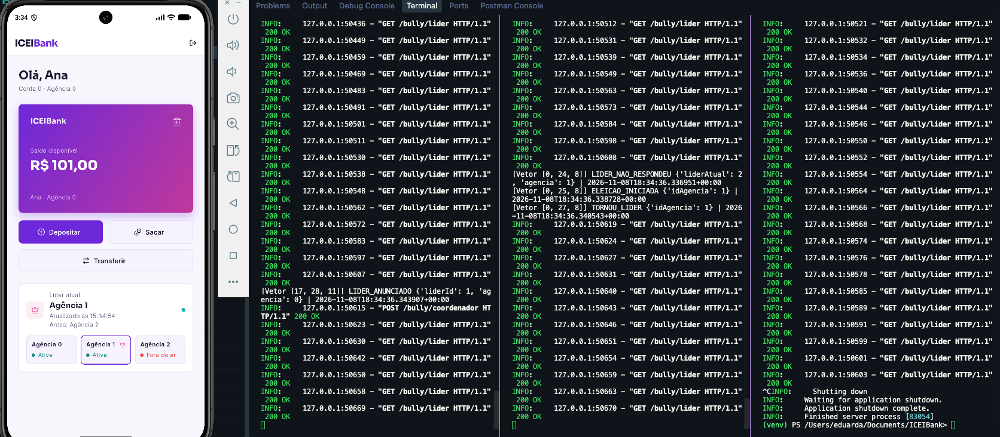
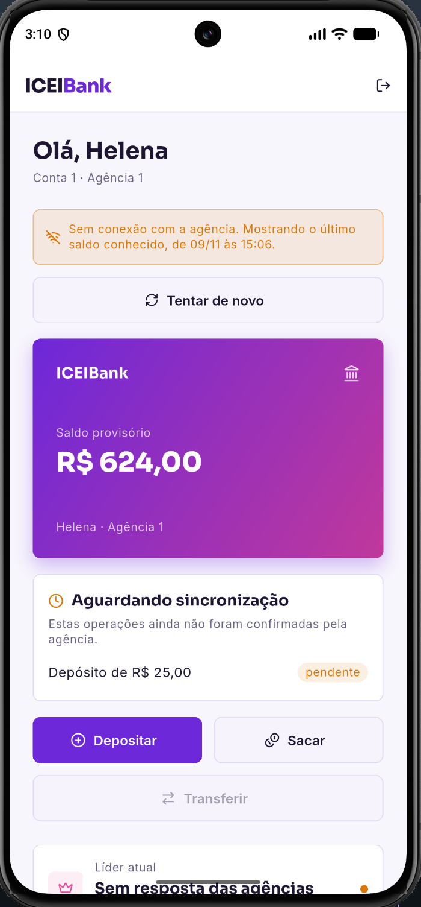
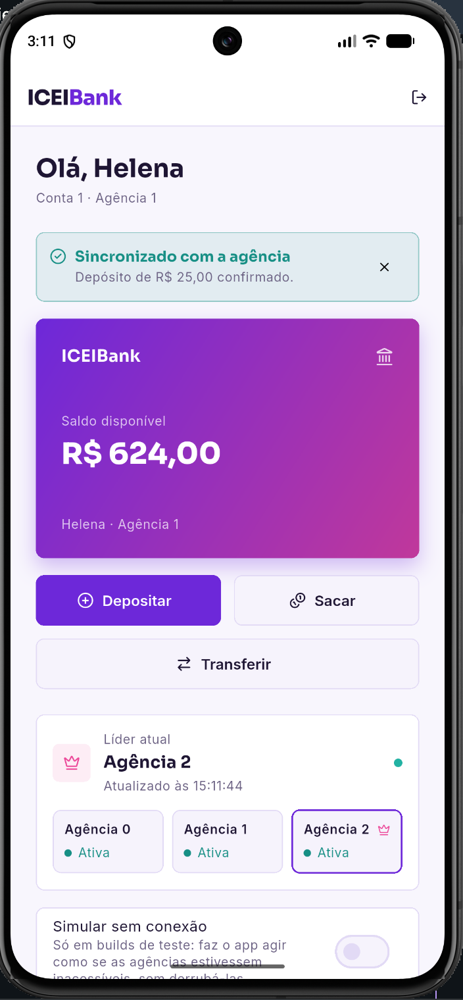
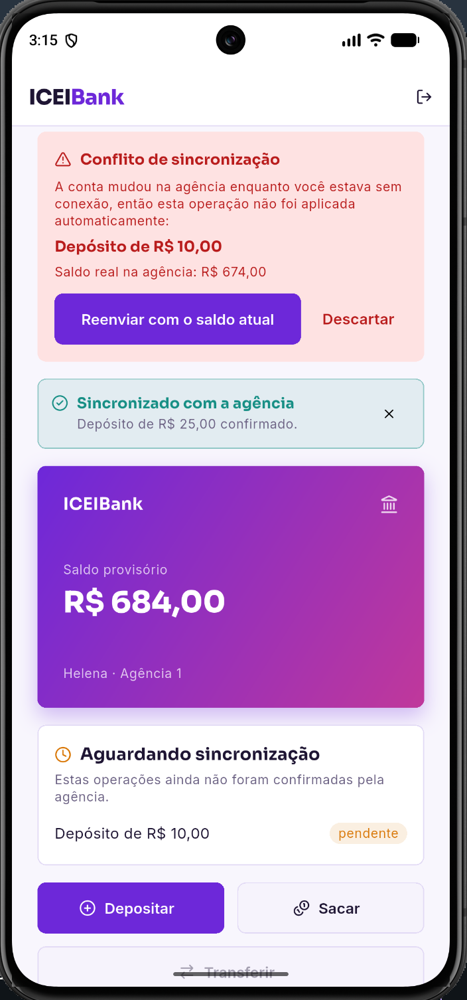

Mensageria, relógio vetorial, eleição de líder e um app que funciona offline.
Eduarda Vieira Gonçalves
Lab. de Desenvolvimento de Aplicações Móveis e Distribuídas
API REST, JWT e frontend React
RabbitMQ e relógio vetorial
App Flutter, líder e offline-first
Containers e transações distribuídas
id_conta % 3
exchange topicfila durablemensagem persistentagencia.X.creditar
CREDITO_REMOTO_FALHOUfila-alertas-<id>), sem desfazer a operação se o RabbitMQ cair.
Lamport usa 1 número. O vetor tem 1 posição por agência e compara posição a posição.
Exemplo real do meu teste:
CRIAR_CONTA Fernanda [7,0,0] × Gustavo [6,4,0]
duas contas criadas de forma independente.
LIDER_NAO_RESPONDEU e nova eleição
Líder: Agência 2
A coroa passou sozinha · Antes: Agência 2


A líder ainda é só informativa. Na Sprint 4 ela passa a coordenar.